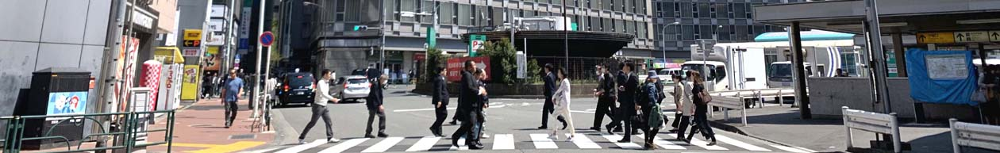
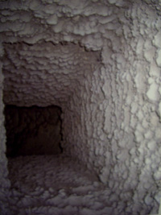
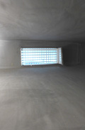
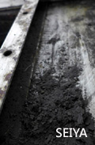

室內有害空氣消毒
陽光、水、空氣是生命三要素，其中人 一生中有80%時間在於室內，在50年前的建築，幾乎每個房子都有可開啟式窗戶及寬敞大門因此空氣流通，每小時可自然換氣2-4次（傳統中小學教室可達6-12次換氣率）。現代的建築物因使用空調，窗戶密閉設計多，每小時換氣低於0.5次，造成二氧化碳過高，工作學習易疲勞、記憶力降低、細菌過敏原多，造成健康問題。
1.TVOC及粉塵為首污染物
化學氣體污染物

 現今又因為工業發展、火力發電、汽機車排放、大陸沙塵暴，使得國內戶外空氣也不甚理想，因此室內空氣之清淨就顯得格外重要，首先是降低隔離污染源，其次是日常配合通風過濾等方法及日常維護為主。1980後至2010年這30年間，台灣氣喘人數成長了15倍，台灣每三個小孩，就有一個是過敏兒，台北地區7-12歲兒童氣喘率高達7-13%，室內有害空氣也會造成神經性中毒體質降低染色體異常、腫瘤..等等。
現今又因為工業發展、火力發電、汽機車排放、大陸沙塵暴，使得國內戶外空氣也不甚理想，因此室內空氣之清淨就顯得格外重要，首先是降低隔離污染源，其次是日常配合通風過濾等方法及日常維護為主。1980後至2010年這30年間，台灣氣喘人數成長了15倍，台灣每三個小孩，就有一個是過敏兒，台北地區7-12歲兒童氣喘率高達7-13%，室內有害空氣也會造成神經性中毒體質降低染色體異常、腫瘤..等等。
以目前戶外空氣品質常常都不太好，其中以粉塵(PM2.5)為主，如果單靠通風是不易解決上述問題，因這是造成許多慢性病來源之一，消費者不易察覺。

室內空氣污染源
裝潢產生之VOC(總有機揮發物)，以甲醛、對二甲苯....等接著劑，以及油漆、塑膠等之化學物質為主以台灣之室內裝潢(修)中，甲醛及二甲苯佔了最大部份，麻煩的是以甲醛而言，它是需要經年累月才能夠釋放完，這些氣體是被歸類於環境賀爾蒙，其中甲醛是被世界衛生組織確認列為一級致癌物。
（一）煙霧：包含香菸、炒菜油煙燒烤油煙等是引起上呼吸道及肺部疾病因子。
(二）微生物：如黴菌、病毒，微生物量之最多處為過濾網、空調箱中、盤管、加濕器，部份微生物對人體建康有害處，易造成上呼吸問題，密閉空間更是2020武漢肺炎傳染好媒介場所。

(四) 蟲、鼠害、塵螨：並非所有蟲類都是不好《而是以蟑螂跳蚤老鼠塵螨本身或排泄物，都會引誘發氣喘或過敏，這部份只要保持環境的每日清潔打掃，比較不容易產生。
(五) 其它：燃燒及人群之二氧化碳、燃燒之一氧化碳、家電產生之臭氧、影印機之粉塵、石材之氡氣(放射性物質)、清潔劑、殺蟲劑...等，其中以清潔劑及殺蟲劑之污染較為嚴重。

在中央空調系統中粉塵量之最多處為過濾網、回風口、外氣入口、送風口附近管路，即ACS(空氣輸送系統)，中央空調許多在主機前端都會家裝不同等級過濾器，但大多業主只是更換濾材，而內部還是因長期堆積，造成了空調管路之風管內的污染。國內大多建築物業主是眼不見為淨，在日本有JADCA(日本風管清潔協會)做為施做標準與規範，依據JADCA調查，當送風管底部塵埃量達每平方公尺5g時，送風口便會出現粉塵污染室內，而日本清洗標準為每平方米應小於1g以下，若依據日本之統計之風管內的塵埃堆積量做計算，定期實施風管清潔之時機約為竣工後的6.6年，但一般而言為了節省預算，都會在8-10年後清洗。
美國也有NADCA規範，則是依不同場所有不同清潔度之規範，目前也是以粉塵量為標準及是否經過微生物消毒處理準則驗收，台灣雖沒明訂標準，但基本上是以實際看查是否有灰塵做為驗收標準(並非用手(布)擦拭去檢查，那標準是無塵室之標準)。
家用一搬以分離式空調與窗型空調為主日本在70年代對住宅之污染開始研究，因此出現此字彙，因Sick house所引起的不適或病情，中文稱之病態住宅(症候群)，家中最主要是新裝潢之甲醛。